We consider Toeplitz, Hankel, Vandermonde and Cauchy matrices as well as the matrices having similar structures. These are the most popular classes of dense structured matrices, omnipresent in scientific, engineering and electrical engineering computations. For readers convenience, we recall the definitions (cf. [BP94], [PCZ,a]).
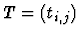
is called a Toeplitz matrix if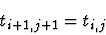
for all pairs (i,j) for which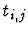
and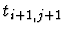
are defined.Toeplitz matrices are a special class (where
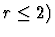
of the following important and well-studied class of Toeplitz-like matrices having a small displacement rank r (cf. [BP94], pp. 174-211).
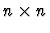
matrix T , define the two displacement generators,
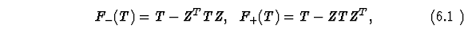
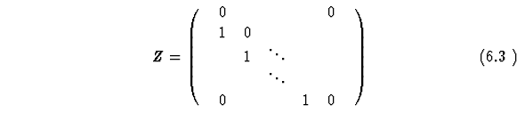
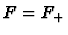
or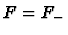
we have
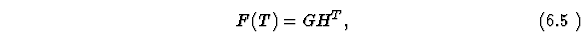
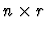
matrices, then the pair of matrices ( G, H ) is called an F -generator or a displacement generator of T of length r and will be denoted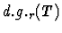
. The minimum r allowing the above representation (6.3) is called the F -rank or the displacement rank of T . T is called a Toeplitz-like matrix if r=O(1) as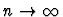
.
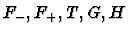
, and r be as in (6.1) and (6.3). Then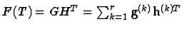
if and only if
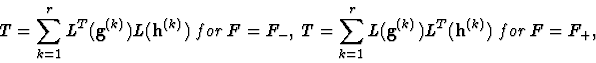
where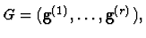
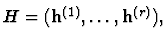
and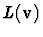
is a lower triangular Toeplitz matrix with the first column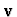
.Hankel matrices and the Hankel-like matrices of displacement rank r are obtained from Toeplitz matrices and Toeplitz-like matrices of displacement rank r , respectively, by their pre-multiplication (or post-multiplication) by the reflection matrix J having ones on its antidiagonal and zero entries elsewhere. (Note that
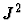
is the identity matrix.)
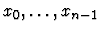
denote n distinct values and let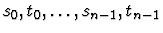
denote 2n distinct values. Let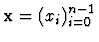
,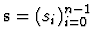
,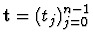
. Then the matrices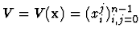
and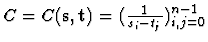
are called Vandermonde and Cauchy matrices, respectively. Furthermore, the matrices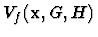
and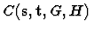
are said to be given with their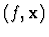
-scaling/displacement generator (G, H) and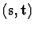
-scaling generator (G, H) , both of length r , respectively, if
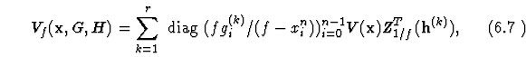
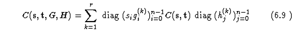
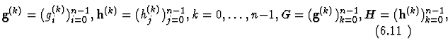
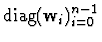
denotes the diagonal matrix with the diagonal entries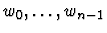
;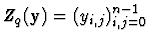
is the q -circulant matrix,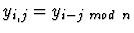
for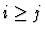
,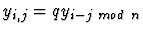
for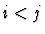
,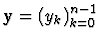
, q=1/f , and f is a scalar,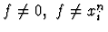
for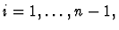
so that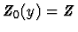
for the matrix Z of (6.2) and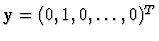
. 1-circulant matrices are called circulant. The minimum length r in the above representations of the matrices and (for all pairs and , respectively) is called the scaling/displacement rank and the scaling rank of these matrices, respectively. If r=O(1) as , then the above matrices are called Vandermonde-like and Cauchy-like matrices, respectively.Note that Vandermonde and Cauchy matrices have scaling/displacement and scaling ranks 1, respectively.
We also recall the next well-known results [BP94].
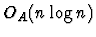
for Toeplitz and Hankel matrices and by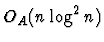
for Vandermonde and Cauchy matrices.Dut to Theorem 6.1 and equations (6.1)-(6.3), Theorem 6.2 is immediately extended to Toeplitz-like, Hankel-like, Vandermonde-like and Cauchy-like matrices.
As this was shown in [P89/90], some computations with dense structured matrices of the above four classes can be conveniently reduced to each other, so that any successful algorithm for some fundamental computations for matrices of one class can be effectively extended to the matrices of the other three classes. In [GKO95], [Hei95] such a reduction from Toeplitz and Toeplitz-like matrices to Cauchy-like matrices was simplified and exploited to yield an effective practical algorithm for fast and numerically stable solution of Toeplitz and Toeplitz-like linear systems of n equations by Gaussian elimination with pivoting (at the cost )), and surely, this is immediately extended to the Hankel and Hankel-like linear systems. The main point of this approach is that the row and/or column interchange destroys the structure of Toeplitz-like and Hankel-like matrices (which either blocks the application of pivoting in Gaussion elimination or slows down the computation) but preserves the Cauchy-like matrix structure. The latter property of Cauchy-like matrices can be observed either from matrix equation (6.5) or from the following equivalent representation,
Another known approach to solving Toeplitz-like and Hankel-like linear systems of equations as well as to the computation of short displacement generators of the inverses of Toeplitz, Hankel, Toeplitz-like and Hankel-like matrices, in all cases at the cost , is by the divide-and-conquer MBA algorithm of [M80], [BA80].
The algorithm relies on the following well-known factorization of block matrices,
where I and O denote the identity and null matrices of appropriate sizes, B is a matrix, and S=S(B, A) is called the Schur complement of B in A . (6.7) represents block Gauss-Jordan elimination applied to the block matrix A of (6.9). If the matrix A is strongly nonsingular (that is, has nonsingular leading principal submatrices for all k ), then the matrix S of (6.9) can be obtained in n-k steps of Gauss-Jordan elimination.
For a strongly nonsingular matrix A , the factorization (6.7)-(6.9) can be extended to the matrices B and S and then recursively to the matrices of smaller size until we arrive at matrices. The important point is to preserve the structure of the input matrix A throughout the recursive process, which enables the application of Theorem 6.2 and respective decrease of the computational time to the cited level . The algorithm of [M80], [BA80] achieved this goal for Toeplitz-like matrices.
By using the reduction of [P89/90] from Cauchy-like to Toeplitz-like matrices, the latter cost estimate can be extended to the Cauchy-like case. Such a reduction, however, is more involved than the reduction into the opposite direction (from Toeplitz-like to Cauchy-like matrices), and its numerical properties are not clear. In [PZ96], [PTCPS98] and [OP98], the divide-and-conquer algorithm based on(6.7)-(6.9) was devised directly for the Cauchy-like inversion and the solution of Cauchy-like linear systems of equations, at the cost (cf. Theorem 6.2). In [OP98], the algorithm was also applied to some major problems of rational interpolation, which are the basis for some fundamental signal processing computations and which can be expressed as the recursive factorization problem based on (6.7)-(6.9). The main technicality of the extension of the MBA algorithm is the extension to the Cauchy-like case of the results of [M80], [BA80] on maintaining the Toeplitz-like structure throughout the recursive factorization process.
If the inverses of the dense structured matrices of the above classes are computed numerically, with some bounded output errors due to roundoff, then the output approximations can be very rapidly refined by Newton's iteration. Straightforward application of such an iteration causes rapid growth of the length of the displacement or scaling generators and a slowdown of the computations as a results, but some nontrivial modifications avoid this problem [P92a], [P93], [PZHD97], [PBRZ,a].
The basic block of all these algorithms is the multiplication of a dense
structured matrix of a given class by a vector (cf. Theorem
6.2 on the complexity of such a multiplication). In the Cauchy-like case, we have the reduction to the
problem of multiplication of a Cauchy matrix by a vector, also known as
Trummer's celebrated problem, having various applications to
scientific and engineering computing (see bibliography in [PTCLS98]).
By Theorem 6.2, its solution cost is bounded by ,
but the algorithm of [Ger87] supporting this bound is numerically
unstable. For numerical solution of Trummer's problem, the methods of
practical choice are the multipole algorithms (cf. [Rok85],
[Ger87], [AGR88], [GR87], [War98]), which are numerically stable and
compute an approximate solution of Trummer's problem at the cost where  bounds the output error norm.
bounds the output error norm.
The cited transitions among various classes of structured matrices have some interesting applications to polynomial computations. In particular, recall that polynomial interpolation and multipoint evaluation can be expressed as the computation of the vector for a given pair of vectors and and of the vector for a given pair of vectors and , respectively, where the three vectors , and of the same dimension n satisfy the vector equation
and is defined in Definition 6.2. Here we assume a polynomial p(x) of degree at most n-1 with the coefficient vector , whereas is the vector of the n nodes of evaluation or interpolation, and is the vector of the values of p(x) at these nodes.
The known fast algorithms yield the cost bound for both problems but are numerically unstable. The similarity with Trummer's problem can be continued from this point; furthermore, we reduce polynomial interpolation and multipoint evaluation to Trummer's problem based on the next equation (such a reduction was first proposed in [PLST93], [PZHY97]; cf. also [PTCLS98], [PTCPS98]):
Here , , is the matrix of discrete Fourier transform, being a primitive n -th root of 1. At a cost , equations (6.10) and (6.11) combined reduce the multipoint polynomial evaluation problem to Trummer's problem, where one may apply effective multipole algorithms. The resulting approximation algorithms for polynomial evaluation are fast and numerically stable, as this was confirmed by the results of extensive numerical experiments reported in [PZHY97]. To yield a similar reduction of the polynomial interpolation problem, one may invert equation (6.11) and then use the known expressions for the matrices and (see [BP94], p. 131; [PTCLS98], [PTCPS98]). The constructions proposed in the papers [PTCLS98] and [PTCPS98] also involve and exploit some matrix equations extending (6.11), which enable the reverse reduction, that is, from Trummer's problem to the evaluation and interpolation, with the objective to improve the known algorithms for Trummer's problem.